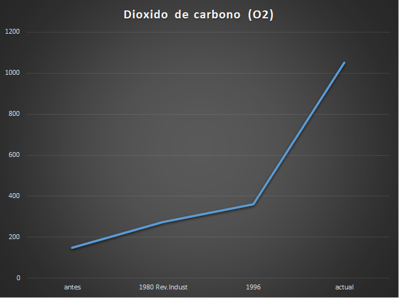

Los cambios en las condiciones actuales de vida (como aumento de población, mayor necesidad de alimento, mayor gasto energético, etc.) han propiciado los grandes avances tecnológicos en la actualidad.
Haber hecho todo lo posible para resolver estas necesidades trajo inconscientemente otro tipo de inconvenientes: problemas ambientales.
La gran mayoría de nuestras actividades habituales diarias generan contaminación, cuyo receptor final es el medio ambiente. ¿Cuánta y qué tipo de contaminación generarán las empresas?
Tipos de impacto ambiental
Antes de observar las cantidades en números, es necesario primero ver los datos cualitativos. Hay muchos tipos de contaminación que las empresas en mecatrónica hacen actualmente.Desertificación de suelos
Disminuye y finalmente desaparece la vegetación en las zonas de tierras áridas y semiáridas.Cambio climático y producción de niebla en ciudades
Estrés por el intenso calor, precipitaciones extremas, inundaciones, deslizamientos de tierras, contaminación atmosférica y falta de agua.Afectación a la biodiversidad
Causando una disminución en la variablidad genética.Contaminación y sedimentación de aguas
Arena, arcilla, limo y otras partículas sueltas del suelo que se depositan en el fondo de una masa de agua.
Vertederos de desechos
Las industrias vierten en los países más pobres, lo cual afecta negativamente a la flora, la fauna y el medio ambiente.
Emisiones de CO2 en distintas épocas de la sociedad
Ahora bien, ya conociendo qué tipo de contaminación principalmente provocan este tipo de empresas en la actualidad, ya podemos abordar algunos datos numéricos. La contaminación ambiental no es un tema nuevo, y prueba de ello, es las expulsiones de dióxido de carbono a la atmósfera registradas en distintas épocas.
Se registraron las siguientes cantidades en miles de millones de cantidades métricas:
- Antes: 150
- 1980 Rev. Industrial: 275
- 1996: 361
- Actualidad: 1052

Desechos electrónicos conforme los años pasan
Cuando hablamos de desechos electrónicos, hacemos referencia a baterías, enchufes, celdas electroquímicas, etc. Ahora bien, desde el año 2016 (que es cuando esta investigación empieza a tomar curso) se nota como las cantidades en toneladas solamente van en aumento. Aunque en el año 2019 se denotaba un poco de esperanza, el inicio de la nueva década solo nos demostró que los mismos problemas persisten.
El volúmen de residuos electrónicos crece cada año a un ritmo preocupante: en 2021 se desecharon 57,4 millones de toneladas de basura tecnológica, cuya magnitud supera a la Gran Muralla China, la construcción humana más pesada del mundo.
Cantidades en millones de toneladas
- 2016: 44,7
- 2018: 48,5
- 2019: 24,9
- 2020: 53,6
- 2021: 57,4
2016
2018
2019
2020
2021